Porciones para compartir
Platos generosos pensados para disfrutar entre dos o más personas, con una propuesta que prioriza la abundancia y el encuentro.
Bodegón en Villa Crespo · CABA
Comida casera porteña, milanesas XXL, pastas, parrilla y platos generosos para compartir en familia o con amigos, dentro del Club Asociación Benito Nazar.
Un bodegón de barrio en Villa Crespo
En El Bodegón de Benito recuperamos el ritual porteño de sentarse a comer rico, abundante y sin apuro. Nuestra carta combina el espíritu de los bodegones tradicionales con carnes, pescados, pastas, guisos, parrilla y especialidades de influencia italiana y española.
Estamos en Antezana 340, dentro del Club Asociación Benito Nazar, en Villa Crespo. Es un lugar para almorzar, cenar, reunirse con amigos o disfrutar en familia de una mesa generosa.
Por qué elegir este bodegón en Villa Crespo
La esencia del bodegón de barrio está en compartir una buena mesa, comer rico y sentirse como en casa.
Platos generosos pensados para disfrutar entre dos o más personas, con una propuesta que prioriza la abundancia y el encuentro.
La especialidad de la casa se presenta en distintas variedades: napolitana, suiza, a caballo, cuatro quesos, cheddar y panceta.
Parrilla, pastas, risottos, pescados, mariscos, guisos y postres tradicionales para que cada comensal encuentre su favorito.
Un salón amplio y activo dentro del Club Asociación Benito Nazar, ideal para una comida familiar, una salida con amigos o una celebración.
Para elegir sin apuro
Conocé la carta de este bodegón de Villa Crespo y encontrá tu próximo plato favorito.

Parrilla, pastas caseras, pescados, guisos y platos abundantes con sabor a cocina de barrio en Villa Crespo.
Ver carta menú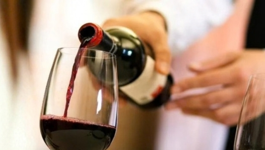
Opciones para acompañar una parrillada, una pasta rellena o cualquier encuentro alrededor de la mesa.
Ver carta de vinos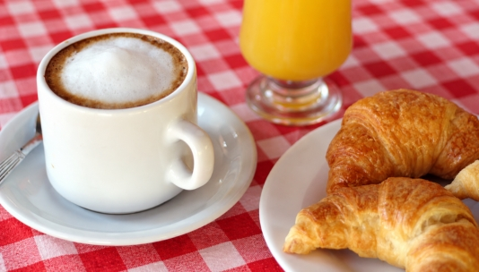
Desayunos, meriendas y una pausa con ese sabor cálido y cotidiano que hace volver.
Ver carta de cafetería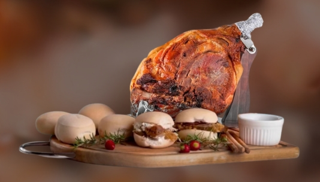
Una propuesta ideal para compartir, reunirse y celebrar alrededor de una mesa bien servida en Villa Crespo.
Ver propuesta de pernilesUna imagen vale más que mil palabras
En El Bodegón de Benito, la abundancia se ve y se comparte. Sus milanesas XXL son la gran insignia: miden casi 40 cm y pueden llegar a pesar hasta 3 kilos, con versiones como Napolitana, 4 quesos, Raclette o Alfredo con panceta.
También hay pastas servidas en horma de queso, fondue de cabutia rellena y platos tradicionales de porciones generosas. Una propuesta pensada para ir con amigos o en familia, y para que nadie se quede con hambre.
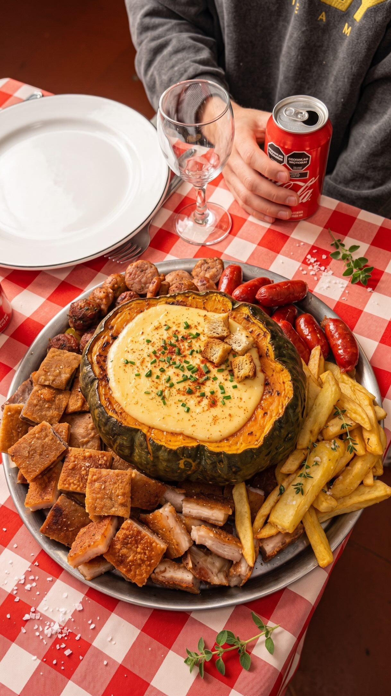
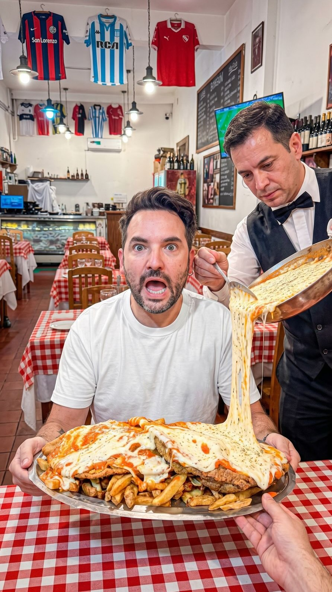
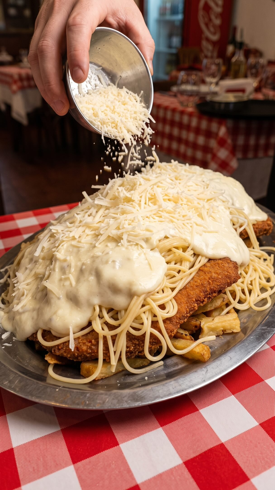
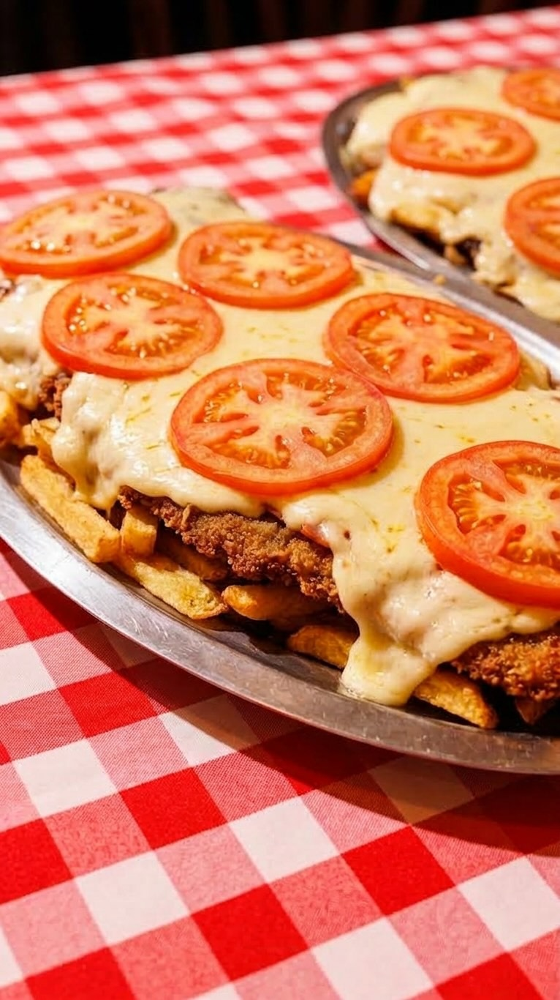
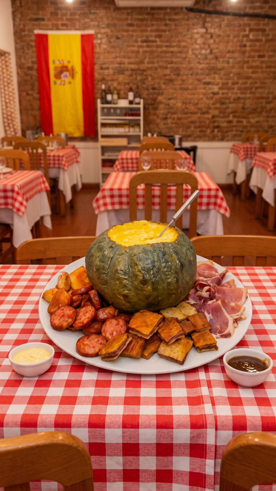
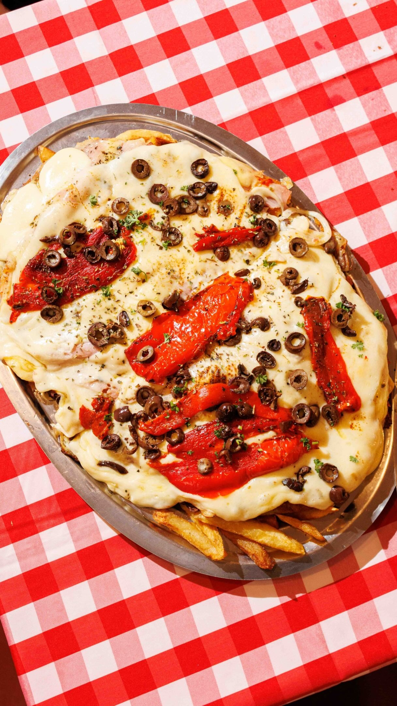
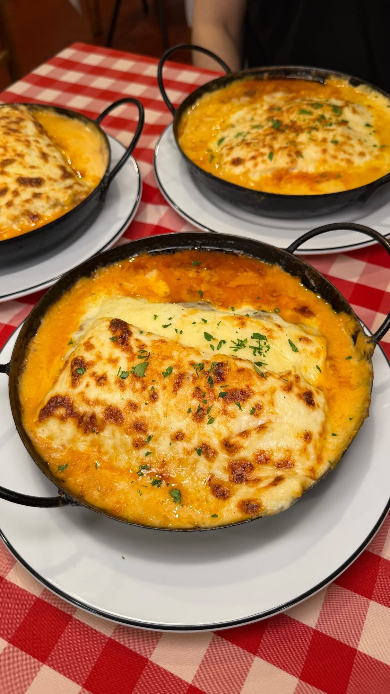
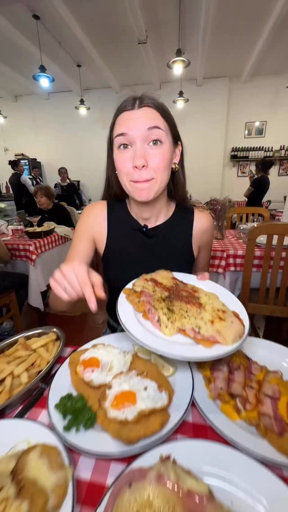
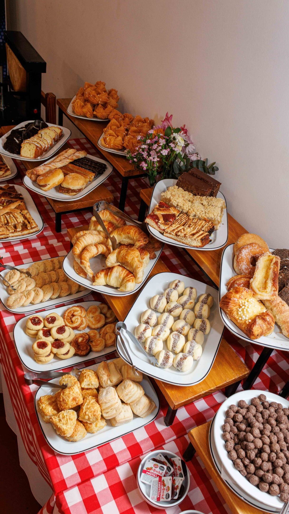
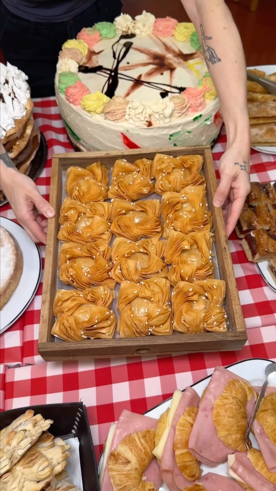
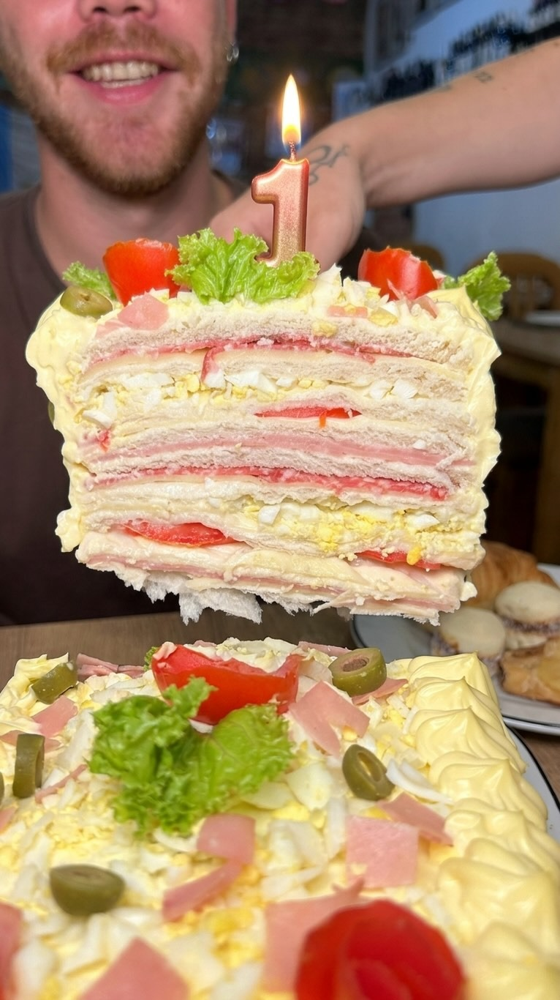
Una carta para cada momento
La propuesta de El Bodegón de Benito acompaña distintos momentos del día: desayunos y meriendas, almuerzos, menú ejecutivo, una pausa de bar o una cena abundante para compartir.
Podés disfrutar la experiencia en el salón, elegir una mesa al aire libre o consultar por el retiro en el local.
Una pausa cálida, cotidiana y con sabor casero.
Platos con espíritu de cocina de barrio para cortar el día.
Mesas abundantes para compartir con familia y amigos.
El plan porteño de comer rico, brindar y quedarse un rato más.
Bodegón en Villa Crespo
Estamos en Antezana 340, Villa Crespo, dentro del Club Asociación Benito Nazar. Consultá disponibilidad y reservá tu mesa para disfrutar comida casera porteña con amigos o en familia.
Por WhatsApp o a través de Apparta.
Horarios: información pendiente de confirmar con el local.